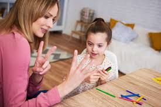

Introduction and Importance
Mathematically, number skills are important in child development and for their future. Learning about basic arithmetic prepares the child and offers them such functions as logical thinking as well as problem-solving abilities plus abstract thinking. Acquisition of numeracy is the process that prepares learners for higher level mathematical learning as well as for real life applications like budgeting, measurement and decision making. A connection is made to having school subjects such as Math in nearly every facet of their day to day existence including identifying patterns and shapes, time as well as money. School Readiness: Early math experiences also foster a child’s organization, sorting and categorizing skills which is relevant in all learning area. First, well-established numeracy knowledge helps children confidently manage future learning processes and numerous professions, including technical and economic ones, that involve calculations.
Theories and Perspectives
Piaget’s stages of cognitive development that suggest that constructivism when used in early learning most effectively with an understanding that the children learn best through interactions and experiences with physical objects that enhance constructivism in learning mathematics. In mathematics, this is the process of going beyond mere rote learning and involving the child with objects, counting and formatting. Jerome Bruner’s theory of cognitive development also plays a key role in mathematics education, suggesting that children understand math concepts by progressing through three stages: enactive, an image-feature type or iconic, and symbolic, an abstract symbol type. Such progressive development allows children to learn difficult mathematical concepts at their own easy understanding. Based on these theories manipulatives like counting blocks or abacues are used in teaching math to the children as they help the children to manipulate and handle math difficulty.
Resources and Tools
There are many resources and applications available to develop numeracy skills for one and another. Actual items used in teaching Mathematics include counters, blocks and abacuses since they help the children to use their hands in practicing what is taught. Interactive and computer based learning systems like Khan Academy, Prodigy, and Mathletics have exercises and games which assist learners in mastering the concepts taught in math, in an individual way. For more advanced ideas, tools such as IWBs or math-related software to deepen the concepts as means of illustration. Moreover, math story books also assist children learn numbers and every operation and relate it to real life situations. This paper has demonstrated that through employing a variety of physical, electronic and print media, one is able to establish a rich environment for teaching and learning math.
Learning Experiences
0-2 Years
Packing and unpacking shapes and sizes using toys such as stacked shapes or a shape sorter would help to develop early math skills as the toddler is able to sort them.
2-3 Years
Simple counting games and activities that get the toddlers to recognize numbers assist the learners in the development of number sense that is quantity recognition.
3-5 Years
Young Children count to learn addition and subtraction whereby the help of counting blocks or their fingers are useful to preschoolers.
6-8 Years



Observing problems and solving activities that involve measurements, patterns and geometry presents school going children with harder mathematical contents